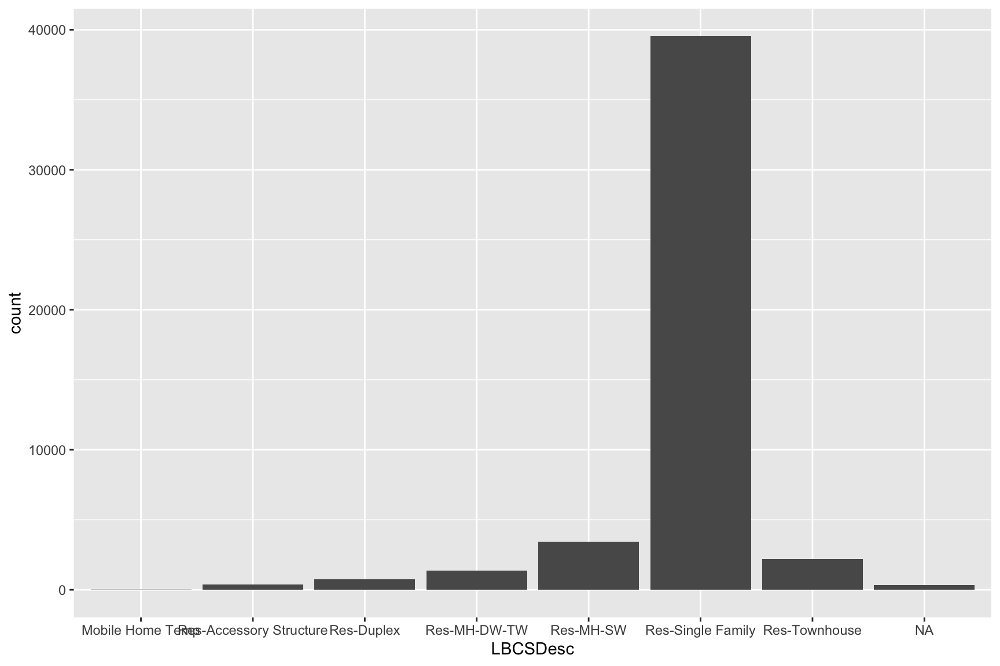
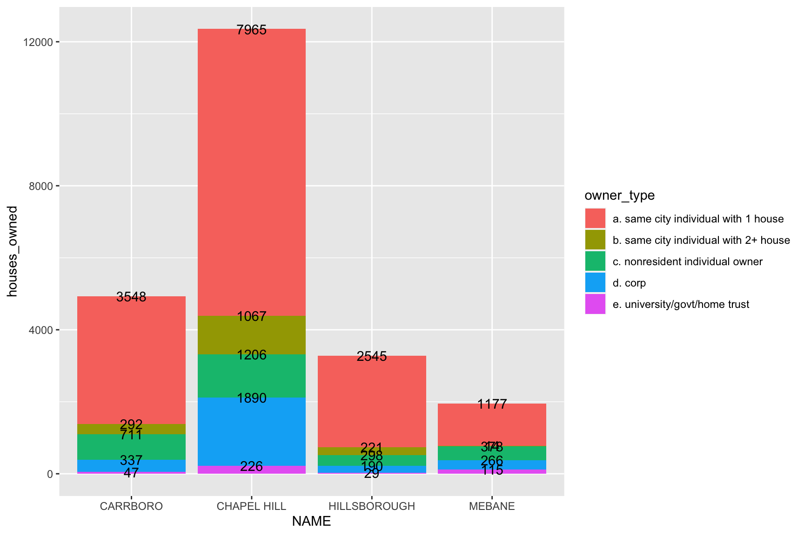

1 Introduction
Let’s find out how many residents in Orange County, NC own multiple single-family homes or townhomes!
2 Get some data
We need: Owner name and Structure type.
Let’s pull in the Orange County parcel data, which includes owner information. It’s available here.
We also need the Orange County Address data, which has the land use code. That’s available here.
Finally, we need the municipal boundaries to accurately capture which jurisdictions are relevant. That’s available here.
show the code
download.file("https://web.co.orange.nc.us/gisdownloads/ParcelsGDB.zip", destfile = "ParcelsGDB.zip")
unzip("ParcelsGDB.zip")
download.file("https://web.co.orange.nc.us/gisdownloads/addresses.zip", destfile = "addresses.zip")
unzip("addresses.zip")
download.file("https://web.co.orange.nc.us/gisdownloads/city.zip", destfile = "city.zip")
unzip("city.zip")3 Read in the data!
show the code
data <- read_mdb("ParcelsGDB.mdb", table="PARCELVIEW")Warning: One or more parsing issues, see `problems()` for detailsshow the code
addr <- read_sf("addresses.shp")
city <- read_sf("city.shp")4 Summarise the data
First, we filter the addresses to only single family-type residences. This includes:
Detached single-family
Attached single-family
Duplex
Zero lot line row houses
Accessory units
Townhouses
Manufactured houses
This corresponds to those whose address LBCS Structure codes are in category 1100 other than condominiums (category 1170) and single apartments (category 1160)
show the code
addr <- addr %>% filter(LBCSSubCod < 1160) %>% filter(LBCSSubCod > 0)
ggplot(data=addr, aes(x=LBCSDesc)) +
geom_bar()
We then join in the actual city boundaries.
show the code
addr <- st_join(addr,city)
addr$NAME[which(is.na(addr$NAME))] <- "Unincorporated"Now we join the address data to the parcel data, so we can summarise by owner count. We tag owners with “same city” if their mailing address is in same city and/or zip code as the address of the parcel. We tag owners with “in state” if their mailing address is in NC. We tag them as individuals if their name does not include the terms LLC, University, Carolina, INC, Company, Home Trust or Habitat (for Humanity).
show the code
data$STATE <- gsub(" ", "", data$STATE)
d <- left_join(data,addr,by="PIN") %>%
filter(PIN %in% addr$PIN) %>%
mutate(owner_name = paste0(OWNER1_FIRST," ",OWNER1_LAST),
parcel_count = 1,
samecity_owner = case_when(
ZIPCODE == ZipCode | CITY == MailingCit ~ 1,
TRUE ~ 0
),
in_state_owner = case_when(
STATE == "NC" ~ 1,
TRUE ~ 0
),
corp_owner = case_when(
grepl("LLC", owner_name) | grepl("CAROLINA", owner_name) | grepl("HOME TRUST", owner_name) | grepl("UNIVERSITY", owner_name) | grepl("CORP", owner_name) | grepl(" INC ", owner_name) | grepl("INC ", owner_name) | grepl(" INC", owner_name) | grepl("COMPANY", owner_name)| grepl("TOWN", owner_name)| grepl("CITY", owner_name)| grepl("HABITAT", owner_name) ~ 1,
TRUE ~ 0
)
)4.1 How many people in each city own more than one house there?
OK first, how many individual/non-corporate owners who live in the same city as their houses own more than one house in each City in Orange County
show the code
multi_owners <- d %>%
group_by(owner_name, corp_owner, samecity_owner, in_state_owner, NAME) %>%
filter(corp_owner == 0) %>%
filter(samecity_owner == 1) %>%
filter(NAME != "DURHAM") %>%
summarise(owner_count = sum(parcel_count)) %>%
mutate(owns_multiple = case_when(
owner_count > 1 ~ "same-city individuals with more than one house",
TRUE ~ "same-city indivudals with only one house")
)`summarise()` has grouped output by 'owner_name', 'corp_owner',
'samecity_owner', 'in_state_owner'. You can override using the `.groups`
argument.show the code
kable(table(multi_owners$NAME,multi_owners$owns_multiple))| same-city individuals with more than one house | same-city indivudals with only one house | |
|---|---|---|
| CARRBORO | 123 | 3548 |
| CHAPEL HILL | 428 | 7965 |
| HILLSBOROUGH | 95 | 2545 |
| MEBANE | 7 | 1177 |
| Unincorporated | 1484 | 16303 |
4.2 Aggregate home ownership by owner type
OK Now. Let’s see how many homes in each city are owned by each of
a) Same-city individuals with 1 house
b) Same-city individuals with 2+ houses
c) Non-local individuals with 1+ houses
d) Corporations with 1+ houses
e) government or universities or community home trust with 1+ houses
show the code
ownership_by_type <- d %>%
group_by(owner_name, corp_owner, samecity_owner, in_state_owner, NAME) %>%
filter(NAME != "DURHAM") %>%
summarise(owner_count = sum(parcel_count)) %>%
mutate(owns_multiple = case_when(
owner_count > 1 ~ "same-city individuals with more than one house",
TRUE ~ "same-city indivudals with only one house")
) %>%
mutate(
owner_type = case_when(
corp_owner == 0 & samecity_owner == 1 & owner_count ==1 ~ "a. same city individual with 1 house",
corp_owner == 0 & samecity_owner == 1 & owner_count >1 ~ "b. same city individual with 2+ house",
corp_owner == 0 & samecity_owner == 0 ~ "c. nonresident individual owner",
corp_owner == 1 & !(grepl("UNIVERSITY",owner_name) | grepl("TOWN", owner_name) | grepl("CAROLINA", owner_name)| grepl("HOME TRUST", owner_name)| grepl("HABITAT", owner_name)) ~ "d. corp",
corp_owner == 1 & (grepl("UNIVERSITY",owner_name)| grepl("TOWN", owner_name) | grepl("CAROLINA", owner_name)| grepl("HOME TRUST", owner_name) | grepl("HABITAT", owner_name)) ~ "e. university/govt/home trust" )
) %>%
group_by(owner_type,NAME) %>%
summarise(houses_owned = sum(owner_count)) %>% filter(!(NAME %in% c("Unincorporated")))`summarise()` has grouped output by 'owner_name', 'corp_owner',
'samecity_owner', 'in_state_owner'. You can override using the `.groups`
argument.
`summarise()` has grouped output by 'owner_type'. You can override using the
`.groups` argument.show the code
ggplot(ownership_by_type, aes(fill=owner_type, y= houses_owned, x=NAME)) +
geom_bar(position="stack", stat="identity") + geom_text(aes(label=houses_owned), position = "stack")